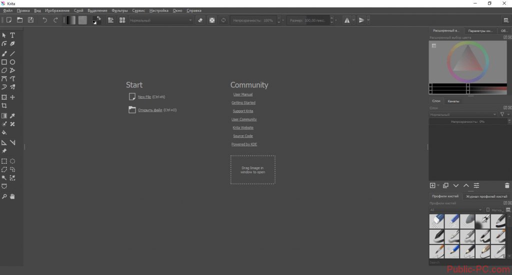
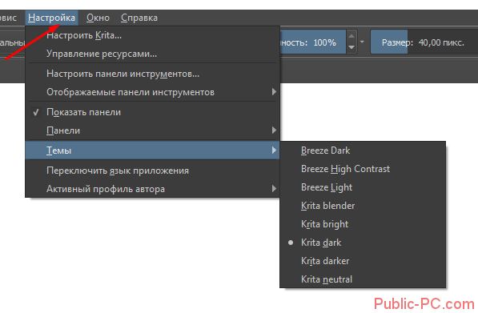
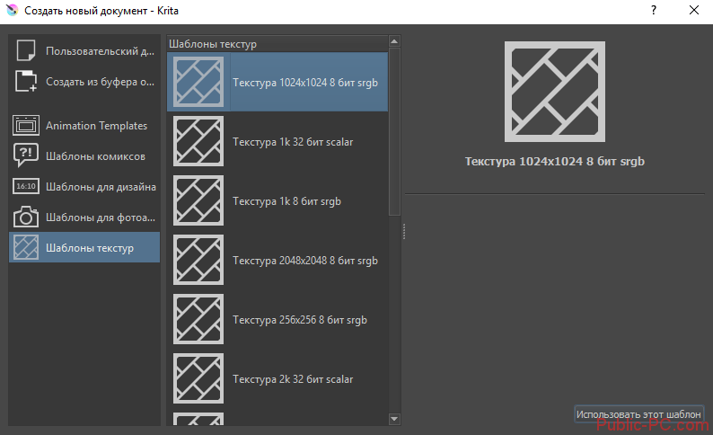
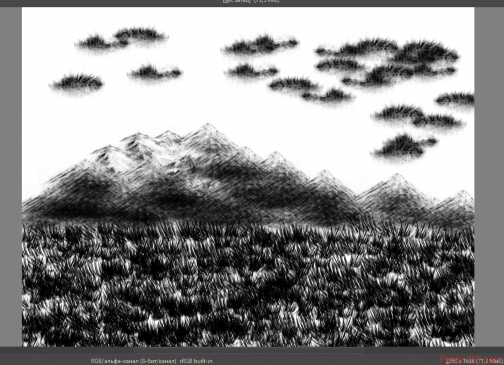
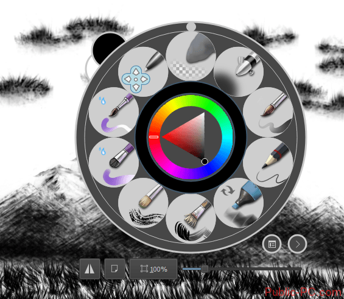
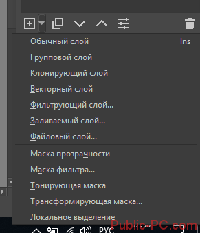

Графічний редактор Krita
Krita – графічний редактор, який пропонує великий функціонал для малювання та обробки растрових зображень. Переваги перед відомим Photoshop очевидні: програма безкоштовна, встановлюється на всі відомі операційні системи (крім Windows можна завантажити для Mac та Linux). Інтерфейс набагато зручніший і зрозуміліший для новачків, є підтримка російської.
- Оперативна пам'ять: 2GB
- Відеокарта: Intel 82945G Express
- Процесор: Intel Core 2 Duo T5200
- Місця на диску: 300 MB
- Операційна система: Windows 7
Системні вимоги
Інтерфейс
Ось перше вікно з інтерфейсом, яке ми побачили після заходу до програми.
Робоче місце зроблено мінімалістично, але стильно. Нічого зайвого: ліворуч – панель з інструментами, праворуч – вікна з палітрою, профілями кистей, інформацією з шарів. Тему оформлення можна змінити у налаштуваннях, як показано на скріншоті. У цій (останній) версії програми на вибір – 8 тем.
Натиснувши на посилання New File (або стандартна комбінація клавіш Win+N), бачимо кілька шаблонів – текстури, шаблони для фотоапаратів, можливість створення коміксів, анімації тощо.
Пензлі
Як і будь-якому редакторі, тут реалізовано принцип пензлів – основного інструменту художника. Спеціальна панель профілів пензлів розташована праворуч, хоча віконце можна пересувати у будь-яке зручне місце.
Крім стандартних олівців і самих художніх пензлів, у програмі є готові рішення для малювання.
Кожну кисть можна настроювати під поточні потреби малюнку.
Не маючи особливих художніх навичок, ми за допомогою трьох пензлів намалювали за п'ять хвилин ось таку картинку.
Зручний вибір пензлів та палітри – правою кнопкою мишки.
Шари
Зручне керування шарами – ще одна перевага Krita. Редактор пропонує створення звичайного, групового, фільтруючого, векторного та інших шарів. Також передбачені різні максі (фільтруюча, прозорість та ін.).
Ресурси
Спеціальний менеджер ресурсів дозволяє використовувати пензлі, створені іншими користувачами програми. Така функція суттєво розширює можливості малювання та обробки зображень. Крім пензлів доступні додаткові текстури, градієнти та ін.
Дзеркальність
Користувач може швидко віддзеркалити зображення – по вертикалі або горизонталі. Також передбачено можливість дзеркального обертання за допомогою інструменту Multibrush. Функція швидкого віддзеркалення допоможе перевернути робоче полотно та подивитися на несправності у побудові художнього макета.
OpenGL
Підтримка OpenGL дає можливість швидше зміни масштабу і обертання полотна. Чіткість зображення не змінюється навіть у разі сильного масштабування.
PSD
Можливість працювати з PSD радує користувачів, які використовують одночасно два або більше графічних редакторів.
Переваги та недоліки
Переваги
- Оптимізована програма
- Сучасний інтерфейс з чудовою версткою
- OpenGL Enhanced
- Широкий асортимент пензлів
- Підтримка шарів
- Підтримка HDR
- Відкрите джерело
Недоліки
- Немає інструментів ретушування зображень
- Часті лаги після нових оновлень
- Текстовий інструмент може здатися незручним